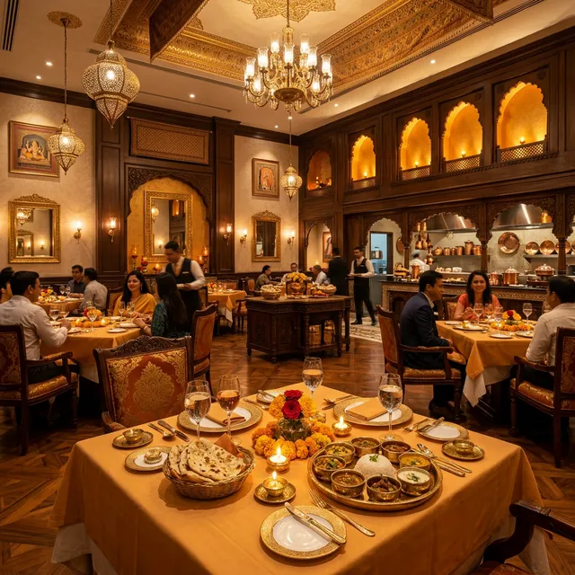
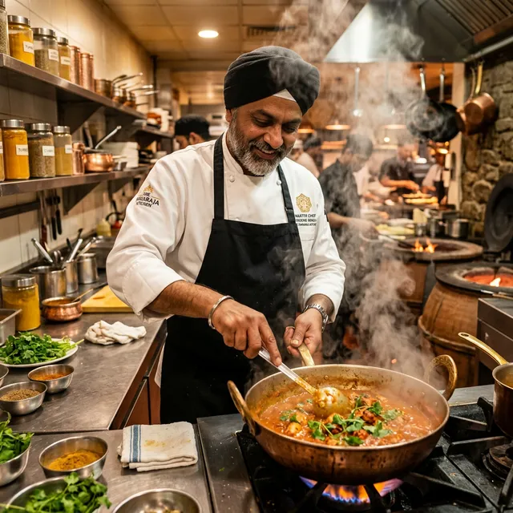
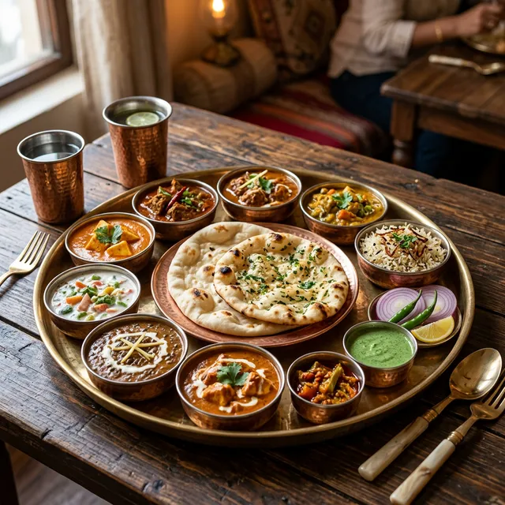
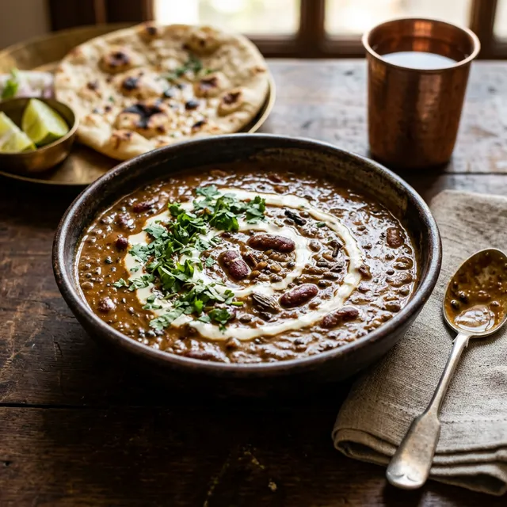
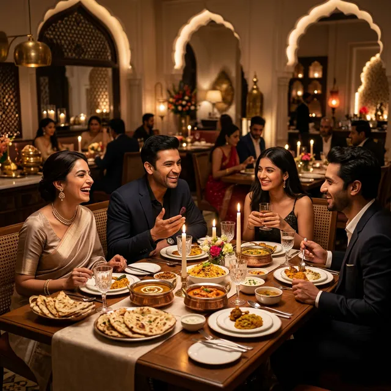

A Symphony of Spices
Welcome to Gopal Sindhi Restaurant. Experience the pinnacle of North Indian dining in the heart of Lajpat Nagar, New Delhi.

Culinary Excellence
At Gopal Sindhi Restaurant, our master chefs bring decades of traditional culinary heritage to your table. We blend age-old North Indian recipes with a refined, modern presentation ensuring an unforgettable fine-dining experience.
Every dish is crafted using the freshest ingredients and hand-ground spices, designed to warm the soul and delight the palate.
Proudly rated 4.8 stars by 98 delighted guests.
Signature Offerings
Discover our carefully curated menu, celebrating the rich diversity of North Indian flavors.

The Royal Thali
A grand feast served in traditional copper and brass. An assortment of our finest curries, fresh bread, and fragrant rice.

Rich Curries
Slow-cooked to perfection. Features velvety Dal Makhani and absolutely decadent Paneer Butter Masala.

Premium Ambience
Dine in a sophisticated setting with warm, luxurious lighting and impeccable, hospitable service.
Guest Testimonials
"The finest Dal Makhani I've had in Delhi. The ambiance is exquisite and the service makes you feel like royalty."
"A hidden gem in Lajpat Nagar. We ordered the Royal Thali and everything was bursting with authentic flavors."
"Beautiful interiors and stunning food presentation. Perfect for a family dinner or a special date night."
Experience the Magic
Reserve your table today for an unforgettable culinary journey at Gopal Sindhi Restaurant.
3CS Mall, Veer Savarkar Marg, Block O, Lajpat Nagar II, New Delhi